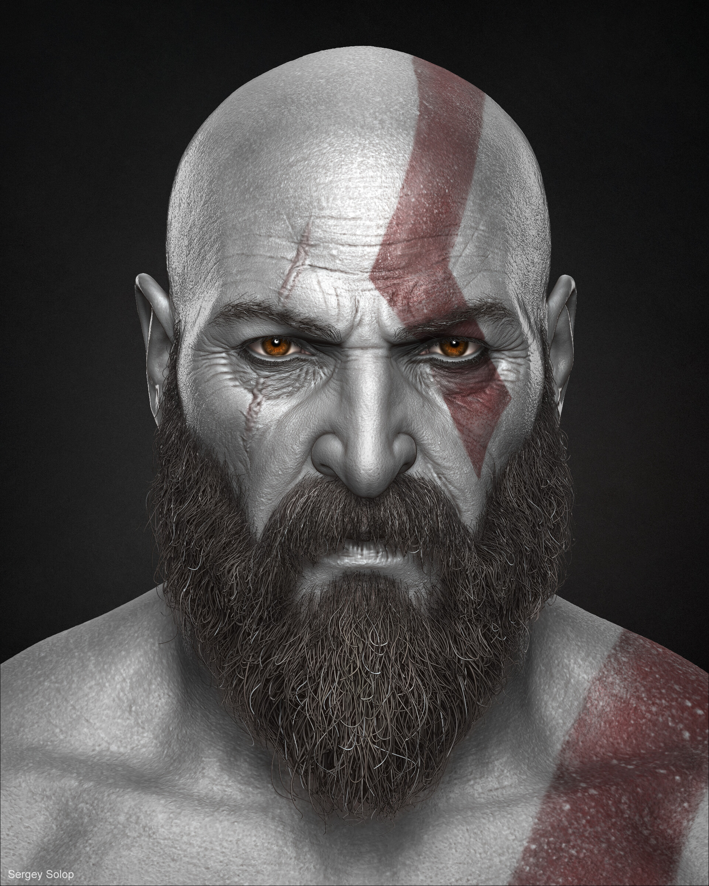

Кратка пробна біографія одного 18-річного хлопця, який намагається стати хорошим програмістом. Все в цій біографії - може бути видумка, або не видумка. Хто знає?
Вступ до мене

Це Владік
Почалась ця сюжетна арка коли мені було 10 - я отримав свій перший ноутбук... Він був не дуже сильний, але його карти було достатньо , щоб потягнути популярну на той момент Bendy and the Ink Machine. Самостійна гра на комп'ютері була настільки важливим заняттям для мене, що відривати від комп'ютера приходилося тоді двом людям одразу. Потім я ознайомився з іншими відеоіграми, які міг позволити цей ноутбук, такими як:
- Mortal Kombat Project
- Five Nights at Freddy`s
- Batman Arkham Asylum
Через деякий час я зрозумів, що можу робити ігри "іншими" для себе - оптимізувати їх графіку, встановлювати модифікації, та змінювати файли. Тепер я міг зануритися в саму структуру гри, зрозуміти, як вона працює всередині. І через деякий час я зрозумів, що ці здібності можна використовувати не лише для задоволення і хоббі, а й для серйозної роботи. Після цього, я потрапив на свої перші курси - заняття по Scratch у своїй школі. З цього й почався мій квест з опанування програмування, та пов'язаних з ним цікавинок...
Тепер, я можу ось-такі викрутаси:
| Навичка | Рівень |
|---|---|
| HTML | — |
| CSS | — |
| JavaScript | — |
| React | — |
Більшість з цих здібностей я, звісно, знайшов не на курсах Scratch. З цим мені допомагали курси ITSTEP, куди я зміг потрапити завдяки тому, що моїм батькам було на мене не все одно! Але чи було цього достатньо? Звісно, багато разів у виконенні складних завдань мені допомагала моя власна смєкалочка, та здібність самостійно пізнавати щось нове. З кожним днем я рухаюсь, може не дуже швидко, але все ж рухаюсь до ідеалу. Я сподіваюсь, що колись я зможу працювати повноцінним web-розробником. Це допоможе мені не просто заробити, але й знайти дорогу до свого шляху в житті.